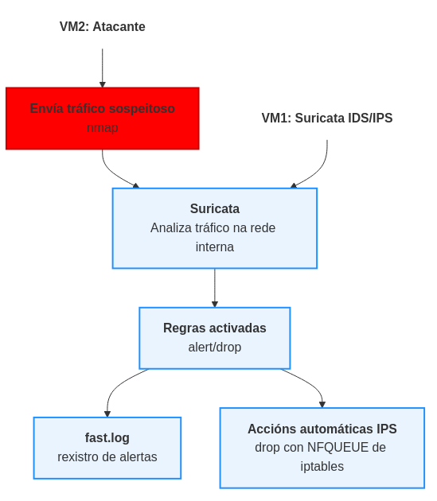

Suricata
Introdución
Neste documento describirase como implementar e integrar Suricata nun escenario con máquinas virtuais usando VirtualBox. Este escenario permite a detección, análise, e visualización de tráficos de rede sospeitosos con Suricata incluíndo accións automáticas en resposta a alertas críticas.
Que son IDS, IPS e resposta a incidentes?
-
IDS (Intrusion Detection System): Un sistema de detección de intrusións que monitorea o tráfico de rede ou os eventos dun sistema para identificar actividades maliciosas ou anomalías.
Tipos de IDS:- NIDS (Network IDS): Monitoriza o tráfico da rede en tempo real.
- Suricata → Motor de detección baseado en sinaturas (modo IDS por defecto).
- Zeek → Analiza e rexistra o comportamento da rede.
- HIDS (Host IDS): Monitoriza eventos en dispositivos individuais (hosts).
- Elastic Agent (Fleet) → Analiza rexistros do sistema e eventos de seguridade nos hosts.
- NIDS (Network IDS): Monitoriza o tráfico da rede en tempo real.
-
IPS (Intrusion Prevention System): Un sistema que non só detecta ataques (como un IDS), senón que tamén pode bloquear ou mitigar automaticamente as ameazas antes de que afecten o sistema.
Tipos de IPS:- NIPS (Network-based IPS): Monitoriza e bloquea tráfico malicioso na rede antes de que chegue aos hosts.
- Suricata en modo inline (AF_PACKET ou NFQUEUE)
- Snort configurado como IPS
- HIPS (Host-based IPS): Funciona directamente en dispositivos finais (hosts), bloqueando procesos ou conexións perigosas.
- Windows Defender con políticas de prevención
- iptables con regras de detección automatizadas
- NIPS (Network-based IPS): Monitoriza e bloquea tráfico malicioso na rede antes de que chegue aos hosts.
Diferencias entre IDS e IPS:
- IDS: Só detecta ataques e xera alertas, pero non bloquea o tráfico.
- IPS: Detecta e bloquea tráfico malicioso en tempo real.
Suricata pode funcionar como IDS ou IPS segundo a súa configuración:
- Por defecto actúa como IDS (modo pasivo, só xera alertas).
- En modo inline (por exemplo con NFQUEUE), pode funcionar como IPS, bloqueando tráfico malicioso segundo as regras configuradas.
Escenario
Máquinas virtuais (VirtualBox) Debian 12
- VM1: Suricata (Detector de tráfico e xerador de logs)
- VM2: Escaneo de portos mediante nmap
- Rede:
- NIC1 (enp0s3): NAT (conectividade á Internet)
- NIC2 (enp0s8): Rede Interna "intnet" para comunicación entre VM1 e VM2 → 192.168.120.0/24
- VM1 (Suricata): IP estática
192.168.120.100/24 - VM2 (nmap): IP estática
192.168.120.200/24
- CPU: 2
- RAM: 4GB
- Disco duro: 20GB dinámico
VM1: Configuración de Suricata
-
Configuración básica:
Editar enapt install suricata -y suricata-update ls /var/lib/suricata/rules/ sed -E -i 's|(default-rule-path:).*|\1 /var/lib/suricata/rules|' /etc/suricata/suricata.yaml/etc/suricata/suricata.yaml -
Configuración de rede:
-
Logs: Executar noutra consola de
root:
-
Reiniciar Suricata para aplicar os cambios
Diagrama de funcionamento

Suricata: Regras Personalizadas e Probas de Detección
Esta sección recolle os pasos e boas prácticas para traballar con regras personalizadas en Suricata, evitando sobrescricións por parte de suricata-update, e asegurando a correcta detección de eventos durante as probas de seguridade.
Obxectivo
- Configurar regras personalizadas sen que se borren ao actualizar.
- Verificar que as regras se cargan e funcionan correctamente.
Pasos Esenciais
1. Evitar sobrescrición de regras
O ficheiro suricata.rules pode ser sobrescrito por suricata-update. Para evitar isto:
- Crea o teu ficheiro personalizado:
/var/lib/suricata/rules/custom.rules - Define no
suricata.yaml: - Asegúrate de que
custom.rulesvai despois desuricata.rules.
2. Lanza Suricata en modo manual
Desactiva o servizo:
Lanza Suricata directamente sobre a interface:
3. Verifica as alertas
Noutro terminal:
Verifica que aparecen alertas no log (fast.log) cando executas accións dende outras máquinas.
Nota sobre regras e HOME_NET
Moitas regras usan variables como $HOME_NET, definidas en suricata.yaml:
Se estás traballando nun contorno de laboratorio onde o tráfico é interno, e non se detectan alertas, pode ser útil crear regras máis abertas:
alert tcp any any -> any any (msg:"NMAP Scan Detectado"; flags:S; threshold:type threshold, track by_src, count 5, seconds 60; sid:1000002; rev:1;)
En vez de:
alert tcp any any -> $HOME_NET any (msg:"NMAP Scan Detectado"; flags:S; threshold:type threshold, track by_src, count 5, seconds 60; sid:1000002; rev:1;)
A primeira regra captura escaneos en calquera dirección, mentres que a segunda só o fará se o destino é a rede definida como $HOME_NET.
Explicación da estrutura dunha regra
Exemplo:
alert tcp any any -> $HOME_NET any (msg:"NMAP Scan Detectado"; flags:S; threshold:type threshold, track by_src, count 5, seconds 60; sid:1000002; rev:1;)
| Campo | Significado |
|---|---|
alert |
Acción: xerar unha alerta |
tcp |
Protocolo TCP (podería ser udp, icmp...) |
any (IP orixe) |
Calquera IP de orixe |
any (porto orixe) |
Calquera porto de orixe |
-> |
Dirección do fluxo do tráfico |
$HOME_NET (IP dest.) |
Rede interna definida no suricata.yaml |
any (porto destino) |
Calquera porto de destino |
msg:"..." |
Mensaxe da alerta |
flags:S |
Coincidencia con paquetes SYN (inicio de conexión TCP) |
threshold |
Regras de frecuencia: se detecta 5 SYNs en 60 segundos do mesmo orixe, lanza alerta |
sid:1000002 |
ID único da regra (Suricata ID) |
rev:1 |
Revisión da regra |
Conclusión
Unha correcta definición de regras, xestión do seu ficheiro, e interpretación da rede ($HOME_NET) é esencial para que Suricata funcione correctamente.
A combinación de suricata -i ... + tail -f fast.log é clave nas fases de desenvolvemento e probas.
Unha vez verificado que todo funciona correctamente, podes volver a arrancar o servizo:
Exemplo 1: Suricata como IDS
Para ilustrar este proceso, suporemos que Suricata en VM1 detecta un escaneo de portos realizado desde VM2 (a cal simula unha máquina externa).
VM2: Xeración dunha alerta en VM1 (Suricata)
Executa os seguintes comandos dende VM2 para simular un escaneo de portos:
apt update && apt -y install nmap
pkill NetworkManager
ip addr add 192.168.120.200/24 dev enp0s8
ip link set enp0s8 up
VM1: Regras que detectan nmap
Suricata está cargando regras que detectan nmap, pero están desactivadas (comentadas con #). As regras comentadas non se aplican, polo que hai que activalas:
1. Definir $HOME_NET en /etc/suricata/suricata.yaml:
2. Regras nmap:
OPCIÓN 1: Editar o ficheiro de regras suricata.rules
Abre o ficheiro de regras para edición /var/lib/suricata/rules/suricata.rules.
Busca e descomenta as liñas que teñen que ver con NMAP ou SCAN. As máis importantes son:
alert tcp $EXTERNAL_NET any -> $HOME_NET any (msg:"ET SCAN NMAP -sS window 2048"; fragbits:!D; dsize:0; flags:S,12; ack:0; window:2048; threshold: type both, track by_dst, count 1, seconds 60; classtype:attempted-recon; sid:2000537; rev:8;)
alert ip $EXTERNAL_NET any -> $HOME_NET any (msg:"ET SCAN NMAP -sO"; dsize:0; ip_proto:21; threshold: type both, track by_dst, count 1, seconds 60; classtype:attempted-recon; sid:2000536; rev:7;)
alert tcp $EXTERNAL_NET any -> $HOME_NET any (msg:"ET SCAN NMAP -sA (1)"; fragbits:!D; dsize:0; flags:A,12; window:1024; threshold: type both, track by_dst, count 1, seconds 60; classtype:attempted-recon; sid:2000538; rev:8;)
alert tcp $EXTERNAL_NET any -> $HOME_NET any (msg:"ET SCAN NMAP -f -sF"; fragbits:!M; dsize:0; flags:F,12; ack:0; window:2048; threshold: type both, track by_dst, count 1, seconds 60; classtype:attempted-recon; sid:2000543; rev:7;)
Asegúrate de que estas liñas NON teñen # diante.
Podes realizar os seguintes comandos para a edición automática:
apt -y install moreutils
grep -i 'et scan nmap' /var/lib/suricata/rules/suricata.rules | sed 's|^# | |' | sponge /var/lib/suricata/rules/suricata.rules
suricata-update sobreescribe o ficheiro /var/lib/suricata/rules/suricata.rules
OPCIÓN 2: Xerar o ficheiro custom.rules
- Define no
suricata.yaml: -
Asegúrate de que
custom.rulesvai despois desuricata.rules. -
Crea o teu ficheiro personalizado
/var/lib/suricata/rules/custom.rulesco seguinte contido:# alert tcp any any -> any any (msg:"NMAP Scan Detectado"; flags:S; threshold:type threshold, track by_src, count 5, seconds 60; sid:1000002; rev:1;) alert tcp any any -> $HOME_NET any (msg:"NMAP Scan Detectado"; flags:S; threshold:type threshold, track by_src, count 5, seconds 60; sid:1000002; rev:1;)
3. Actualizar as regras de Suricata e reiniciar
Executa unicamente o seguinte comando se estás a empregar a anterior OPCIÓN 2:
Independentemente da opción escollida executa:
systemctl stop suricata
systemctl status suricata --no-pager
suricata -c /etc/suricata/suricata.yaml -i enp0s8
Suricata detectará isto e rexistrará a alerta no ficheiro /var/log/suricata/fast.log.
VM2
Executa:
VM1
- Agora Suricata debería detectar o escaneo de
nmap(-sS) e rexistralo enfast.logeeve.json. - Tamén deberías ver as regras aplicadas en
suricata.log(verificar que cargou as regras correctamente). - Agora que están funcionando as novas regras executa:
Exemplo 2: Suricata como IPS
Pódese reaccionar desde VM1?
NIDS vs NIPS
-
Detección ≠ Prevención (por defecto)
Suricata é por defecto un NIDS (sistema de detección), non NIPS (sistema de prevención). Aínda que detecta o tráfico, non o bloquea salvo que estea funcionando en modo inline. -
É Suricata un NIDS ou NIPS na túa configuración? Para que
dropfuncione, Suricata ten que estar en modo inline (IPS). Para iso, debe estar nunha interface con soporte a NFQUEUE (en Linux) e cunha regra de iptables que reenvíe paquetes a esa cola.
Si, configurando Suricata en modo IPS pode bloquear paquetes directamente, permitindo reacción inmediata:
-
Activar IPS en Suricata:
-
Engadir regra de
iptablespara reenviar os paquetes ao motor desuricatapara que poida bloquear:apt update && apt -y install iptables iptables -L -v -n iptables -I INPUT -j NFQUEUE --queue-num 0 iptables -I FORWARD -j NFQUEUE --queue-num 0 iptables -I OUTPUT -j NFQUEUE --queue-num 0 iptables -L -v -nA opción --queue-num 0 debe coincidir co que indicarás ao lanzar Suricata.Facer que as regrasiptablessexan persistentes tras un reinicio: -
Asegurar que as regras relevantes en
Así, podes executar o comando:custom.rulesdindrope non any. Por exemplo: -
Asegúrate de que
action-orderestá correctamente configurado nosuricata.yaml: -
Lanzar Suricata así:
Agora Suricata bloqueará automaticamente tráfico malicioso segundo as regras configuradas. Así, se executamos de novo o comando nmap en VM2 deberían filtrarse os portos:
E non se filtrará tráfico non malicioso, como o comando ping:nmap -sS 192.168.120.100 Starting Nmap 7.93 ( https://nmap.org ) at 2025-04-11 00:13 CEST Nmap scan report for 192.168.120.100 (192.168.120.100) Host is up (0.0011s latency). All 1000 scanned ports on 192.168.120.100 (192.168.120.100) are in ignored states. Not shown: 1000 filtered tcp ports (no-response) MAC Address: 08:00:27:F7:D7:80 (Oracle VirtualBox virtual NIC) Nmap done: 1 IP address (1 host up) scanned in 22.05 secondsping -c2 192.168.120.100 PING 192.168.120.100 (192.168.120.100) 56(84) bytes of data. 64 bytes from 192.168.120.100: icmp_seq=1 ttl=64 time=1.05 ms 64 bytes from 192.168.120.100: icmp_seq=2 ttl=64 time=1.22 ms --- 192.168.120.100 ping statistics --- 2 packets transmitted, 2 received, 0% packet loss, time 1001ms rtt min/avg/max/mdev = 1.045/1.130/1.216/0.085 ms -
Conclusión adicional importante:
- Si, Suricata pode reaccionar directamente desde VM1, sempre que as regras necesarias estean configuradas e activas, permitindo bloquear inmediatamente intentos coñecidos como escaneos realizados con nmap desde máquinas externas (por exemplo, VM2).